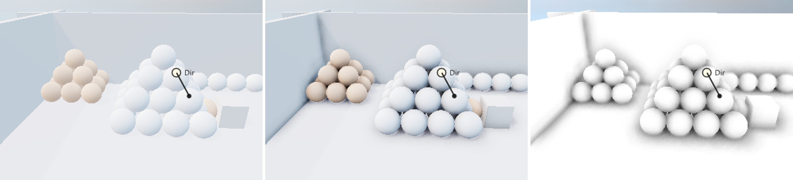

SSAO 학습 문서
화면 공간 앰비언트 오클루전 — 무엇을 근사하는가, 깊이 버퍼로 가림을 세는 방법, 우리 엔진의 두 패스와 적용 자리, 한계
2026-11-25 · SSAO 이야기는 지금까지 디퍼드·클러스터드·SSAO 계획 4장과 구현 기록 2.9, rendering-analysis 8.2의 패스 목록에 나뉘어 있었습니다. 이 문서는 원리부터 다시 설명하고 지금 코드에 맞춰 정리합니다. 계획 문서와 코드가 다른 곳은 코드를 따랐고 9장 끝에 모아 두었습니다.
기준: 커밋 f3a337e + 작업 트리(2026-11-25). 코드 위치는 파일과 함수·타입 이름으로 적었습니다.
1. 왜 필요한가
1-1. 환경광은 가려진다
환경광(하늘빛, IBL)은 반구 전체에서 들어오는 빛입니다. 열린 바닥은 하늘 반구를 다 보지만, 벽과 바닥이 만나는 모서리나 물체끼리 닿는 틈은 주변 기하가 반구 일부를 막아서 빛을 덜 받습니다. 표면 한 점에서 반구의 몇 퍼센트가 막혀 있는가가 앰비언트 오클루전(AO)입니다. AO 1은 하나도 막히지 않음, 0은 다 막힘입니다.
그림자 맵은 조명 하나의 방향에 대해서만 가림을 압니다(그림자 맵 학습). 방향이 정해지지 않은 환경광에는 그림자 맵을 쓸 수 없어서, 가림이 없으면 구석과 접촉면이 열린 면과 같은 밝기로 떠 보입니다. 물체가 바닥에 붙어 있는지 떠 있는지 구분이 잘 안 되는 것도 이 때문입니다.
1-2. AO를 얻는 방법들
| 방법 | 무엇을 아는가 | 약점 | 이 엔진에서 |
|---|---|---|---|
| 재질 AO 텍스처 (구워 둔 AO) | 메시 자기 안의 주름·홈 | 다른 물체와의 가림(물체끼리 닿는 틈, 바닥 접촉)은 모름. 움직이면 틀림 | glTF occlusionTexture, occlusionStrength (MaterialSurface.hlsli) |
| 레이 트레이싱 AO | 장면 전체 | 픽셀마다 광선 여러 개. 가속 구조 필요 | 없음 |
| SSAO (화면 공간) | 지금 화면에 보이는 깊이 버퍼 | 화면 밖·가려진 뒤쪽 기하를 모름. 두께를 모름 | 이 문서. 디퍼드 프레임에서만 |
| HBAO·GTAO | 같은 깊이·노멀 입력을 지평선 각도로 적분 | 셰이더가 더 복잡 | 없음. 계획 문서는 같은 패스 구조에서 셰이더만 바꿔 실험할 수 있다고 적어 둠 (계획 4.3) |
SSAO는 깊이 버퍼를 "장면의 근사"로 봅니다. 이미 그려 둔 깊이와 노멀만 읽으므로 장면 크기와 상관없이 비용이 화면 해상도에 비례하고, 움직이는 물체에도 그대로 맞습니다. 대신 화면에 보이는 앞면 한 겹밖에 모른다는 한계를 받아들입니다(9장).
2. 원리 — 노멀 방향 반구 샘플링
픽셀 하나의 표면 점 P와 노멀 N을 알면, N 쪽으로 반경 r인 반구를 세울 수 있습니다. 반구 안에 점을 여러 개 뿌리고, 각 점이 다른 표면 "속"에 들어가 있는지 봅니다. 속에 들어간 점의 비율이 가려진 비율입니다.
점이 표면 속인지는 깊이 버퍼로 판정합니다. 점을 화면에 투영하면 그 화면 위치에 이미 그려진 표면의 깊이를 읽을 수 있습니다. 그 표면이 점보다 카메라에 가까우면, 카메라에서 보기에 점은 그 표면 뒤에 숨어 있습니다. 표면 뒤를 "속이 찬 곳"으로 보고 가림으로 셉니다.
반구를 노멀 쪽으로만 세우는 이유는 그림 1 캡션 끝에 적은 대로입니다. 구(sphere) 전체에 점을 뿌리면 평평한 면에서도 절반이 바닥 속에 들어가 "가려진 비율 50%"에서 시작합니다. 반구로 세우면 열린 면은 0에서 시작하고 주변 기하가 있을 때만 값이 올라갑니다. 우리 셰이더도 커널을 탄젠트 공간 반구(z ≥ 0, z = 노멀 쪽)에만 만듭니다(4-2).
3. 한 프레임에서 SSAO가 끼는 자리
Renderer::RenderDeferredScene). SSAO 두 패스는 G-buffer와 라이팅 사이에 들어갑니다. 둘 다 화면을 덮는 삼각형 하나(ScreenVS)이고 깊이 테스트가 없습니다.| 순서 | 패스 | 읽음 | 씀 | 코드 |
|---|---|---|---|---|
| 1 | GBuffer | 메시·재질 | GB0~GB3, 깊이 D24_UNORM_S8_UINT | RenderDeferredScene 1단계 |
| 2 | 배리어 | — | G-buffer → ShaderResource, 깊이 → DepthRead | 같은 함수 2단계 |
| 3a | SsaoRaw | b0, b12, t23 깊이, t26 GB1 노멀, t29 흰색 | view.ssaoRaw (R8) | Renderer::RenderSsao, PS_Ssao |
| 3b | SsaoBlur | 같은 레이아웃의 ssaoBlurSet, t29 = ssaoRaw | view.ssaoBlur (R8) | RenderSsao, PS_SsaoBlur |
| 4 | DeferredLight | G-buffer 셋의 t29 = ssaoBlur | view.hdr에 가산 | PS_DeferredLighting |
| 5 | Forward | — | G-buffer에 못 담는 불투명, 하늘, 블렌딩 | 같은 함수 5단계 |
두 셋(ssaoSet, ssaoBlurSet)은 t29만 다릅니다. SSAO 패스는 입력 AO가 필요 없어 흰 텍스처를 꽂고, 블러 패스는 ssaoRaw를 꽂습니다(Renderer::CreateSsaoTargets). 두 패스 모두 LoadOp::DontCare로 시작합니다. 모든 픽셀을 덮어쓰기 때문입니다.
3-1. 디퍼드 프레임에서만 도는 이유
RendererSsao.cpp 머리 주석에 이유가 적혀 있습니다. SSAO는 G-buffer 노멀(GB1)이 있어야 하고, 깊이가 G-buffer 패스에서 이미 다 채워져 있어야 합니다. 포워드 프레임은 깊이와 셰이딩이 한 패스라 셰이딩하는 시점에 깊이가 완성돼 있지 않고, 깊이 프리패스는 따로 두지 않았습니다. 그래서 조건이 셋입니다(RenderDeferredScene).
UseDeferred(view):RenderSettings::deferred가 켜져 있고, 뷰에 G-buffer가 있고, 디버그 뷰가 5(UV)가 아님.m_ssaoSettings.enabled: 씬의environment.ssao.enabled, 또는--ssao=실행 인자의 덮어쓰기(RenderSettings::ssaoOverride).view.HasSsao(): SSAO 타깃 생성에 성공했음. 실패하면 로그를 남기고 G-buffer 셋의 t29에 흰 텍스처를 꽂아 디퍼드는 SSAO 없이 계속 그립니다.
꺼져 있어도 G-buffer 셋은 t29에 ssaoBlur를 꽂고 있으므로 RenderDeferredScene이 상태만 ShaderResource로 맞춥니다. 라이팅 PS는 b0 aoParams.x를 보고 읽을지 정하므로, 꺼진 프레임에는 지난 값이 남은 텍스처를 읽지 않고 1을 씁니다. b12 상수는 꺼져 있어도 프레임마다 올립니다. D3D12에서 그 프레임에 쓰지 않은 Dynamic 버퍼는 바인딩할 수 없기 때문입니다(Renderer::UploadSsaoConstants 주석).
4. 셰이더 세부
4-1. 뷰 공간 위치와 노멀
PS_Ssao는 뷰 공간에서 계산합니다. 픽셀 좌표와 깊이로 ViewPositionFromDevice(Common.hlsli)가 뷰 공간 위치 P를 되살립니다. z는 ViewDepthFromDevice가 투영의 깊이 식을 거꾸로 풀어 구하고, x·y는 투영을 되돌립니다. 원근이면 x = (x_ndc − P20)·z / P00, 직교면 x = (x_ndc − P30) / P00입니다. proj[2][3]으로 원근·직교를 고르므로 직교 카메라에서도 같은 셰이더가 돕니다. TAA 지터는 b0 proj에 들어가 원근이면 P20·P21, 직교면 P30·P31 값을 옮기므로(Renderer::UploadPerFrameConstants), 같은 행렬로 되돌리는 복원도 지터를 함께 뺍니다. 깊이 복원의 기초는 디퍼드·G-buffer 학습, 지터는 TAA 학습에 있습니다.
노멀은 GB1의 옥타헤드럴 노멀을 DecodeOct로 풀고 view의 3×3으로 돌립니다. GB1의 첫 노멀은 노멀 맵을 적용한 셰이딩 노멀입니다. 우리 뷰 공간은 왼손 좌표라 z가 클수록 멉니다. 깊이 1(아무것도 그려지지 않은 배경)인 픽셀은 계산하지 않고 1을 냅니다.
4-2. 커널 — 반구 안의 점
커널은 CPU가 만듭니다(Renderer::UploadSsaoConstants). 시드 1337인 std::mt19937로 만들어 실행마다 같은 점이 나오고, 스크린샷 비교가 실행 사이에 흔들리지 않습니다. 샘플 수가 바뀔 때만 다시 만들고 b12 SsaoParams.ssaoKernel[32]에 올립니다(b12는 544 B).
- 방향: x, y ∈ [−1, 1], z ∈ [0, 1]을 뽑아 정규화. z ≥ 0이라 노멀 쪽 반구만 나옵니다. 상자 안의 점을 정규화하므로 방향은 반구 위에 고르지 않고 상자 모서리 쪽으로 조금 몰립니다. 코사인 가중도 하지 않습니다.
- 길이:
0.2 + 0.8 × (i + u) / n, u는 [0, 1) 난수. 샘플 i가 길이 칸 [i/n, (i+1)/n) 하나씩을 맡는 층화(stratified) 분포라 반경의 0.2~1 사이에 고르게 퍼집니다. 평균 길이는 반경의 0.6배입니다 계산값.
길이가 반경 방향으로 고르면, 바깥 껍질일수록 부피가 커서 부피당 점 밀도는 1/r²로 중심 쪽이 높습니다. 가까운 가림(접촉면)에 무게가 실리면서도 반경 끝까지 닿습니다. 처음에는 흔한 예제 식 "난수 × lerp(0.1, 1, (i/n)²)"를 썼는데, 난수와 제곱으로 두 번 몰려 평균 길이가 반경의 약 16%였습니다(코드 주석과 기록의 값. 식대로 계산하면 n = 16에서 약 19% 계산값). 반경 0.6에서 실제로는 0.1 m 안만 보아서, 쌓인 구 사이 틈처럼 가림 물체가 0.2~0.5 m 떨어진 곳이 거의 어두워지지 않았습니다(SsaoBalls.json에서 발견, 기록 2.9). 지금은 반경 값이 실제로 닿는 거리에 가깝습니다.
4-3. 픽셀마다 커널 돌리기
16개 점을 모든 픽셀이 같은 방향으로 쓰면, 넓은 면에서 같은 오차가 이웃 픽셀로 이어져 띠(banding)가 생깁니다. PS_Ssao는 픽셀 좌표의 4×4 베이어 행렬 BAYER4에서 0~15를 골라 22.5°씩 다른 각도를 만들고 계산값, 그 각도의 벡터를 노멀에 수직으로 그람-슈미트 직교화해 탄젠트 T를 만듭니다. B = N × T입니다. 각도 벡터가 노멀과 거의 평행하면(|dot| > 0.99) 다른 축의 벡터로 바꿉니다.
이렇게 하면 띠가 4×4 주기의 잔무늬로 바뀌고, 바로 뒤의 4×4 블러가 그 무늬를 한 번에 평균합니다. 난수 텍스처 대신 상수 행렬을 쓴 이유는 셰이더 주석에 "결정적 (스크린샷 비교)"으로 적혀 있습니다. 무늬가 프레임마다 같으므로, 프레임마다 회전을 바꾸고 TAA로 누적해 샘플을 늘리는 방식은 쓰지 않습니다.
4-4. 가림 판정과 범위 검사
샘플 하나의 처리는 다음과 같습니다.
S = P + (T·k.x + B·k.y + N·k.z) × radius // 뷰 공간 샘플 점
clip = S · proj; uv = (clip.xy / clip.w) → 0..1 // 화면 밖이면 건너뜀 (continue)
sceneZ = ViewDepthFromDevice(깊이[uv 픽셀]) // 그 화면 위치에 그려진 표면의 뷰 z
range = smoothstep(0, 1, radius / |P.z − sceneZ|)
occlusion += (sceneZ ≤ S.z − bias ? 1 : 0) × range바이어스(ssaoBias, 기본 0.025 m)는 비교에 두는 여유입니다. 샘플 점은 화면에 투영된 뒤 정수 픽셀(int2(uv × 화면 크기))의 깊이와 비교하므로, 기운 면에서는 샘플 위치와 픽셀 중심의 깊이가 조금 다릅니다. 깊이 버퍼의 양자화도 오차를 더합니다. 이 오차로 평평한 면이 자기를 가리는 얼룩을 바이어스가 막습니다.
범위 검사는 가림 물체가 P에서 반경보다 멀리 떨어져 있을수록 그 샘플의 몫을 줄입니다. 기준 깊이는 가운데 픽셀 P의 z이고, 샘플 S의 z는 쓰지 않습니다. 값은 다음과 같습니다 계산값.
| |P.z − sceneZ| | ≤ r | 1.5r | 2r | 3r | 4r |
|---|---|---|---|---|---|
가중 smoothstep(0, 1, r / Δz) | 1 | 0.74 | 0.5 | 0.26 | 0.16 |
곧바로 0이 되지 않고 천천히 줄기 때문에, 반경의 2배 떨어진 앞 물체도 절반은 가림으로 셉니다. 9장의 후광 행이 이 꼬리입니다.
마지막으로 AO = pow(saturate(1 − occlusion / count × intensity), power)입니다. count는 화면 밖이라 건너뛴 샘플도 포함한 전체 샘플 수입니다. 16개 중 4개가 가려지면 기본값에서 0.65, 8개면 0.35입니다 계산값. 출력은 R8_UNORM 한 채널입니다. AO는 0~1 값 하나라 8비트로 충분하고 블러가 계단을 지운다고 CreateSsaoTargets 주석에 적혀 있습니다.
4-5. 블러 — 깊이로 이웃을 거르는 4×4 상자
PS_SsaoBlur는 4×4 이웃 16개를 평균합니다. 베이어 무늬의 주기와 같아서 같은 표면 위에서는 무늬가 한 번에 사라집니다. 이웃의 뷰 z가 가운데와 centerZ × 0.05 + bias보다 많이 다르면 그 이웃은 빼고(가중 0), 남은 이웃만 평균합니다. 10 m 앞이면 허용 폭은 0.525 m입니다 계산값. 거리에 비례하는 이유는 멀수록 한 픽셀이 덮는 깊이 폭이 커지기 때문입니다(셰이더 주석).
- 가중이 0 또는 1이고 노멀은 보지 않습니다. 셰이더 주석은 "간단한 양방향 필터"라고 부르지만, 거리·값에 따라 연속으로 가중하는 본래의 양방향(bilateral) 필터보다는 깊이로 이웃을 거르는 상자 블러에 가깝습니다.
- 오프셋이 −2~+1이라 상자 중심이 픽셀 중심보다 반 픽셀 왼쪽 위에 있습니다. AO가 반 픽셀 밀려 보일 수 있습니다 계산값.
- 물체 경계에서 이웃 일부가 빠지면 16개 회전이 다 모이지 않아 무늬가 덜 지워집니다.
- 창에 가운데 픽셀 자신이 항상 들어 있어서(깊이 차 0) 가중치 합은 1 이상입니다. "이웃이 하나도 없으면 원본 값을 씀" 분기는 방어용입니다. 배경 픽셀은 1입니다.
5. 결과를 어디에 곱하는가
PS_DeferredLighting이 t29의 블러 결과를 읽고 재질 AO와 합칩니다.
ssao = aoParams.x > 0.5 ? ssaoTexture.Load(pixel) : 1
ao = aoParams.y > 0.5 ? s.ao × ssao : min(s.ao, ssao) // 기본은 min
environment = ShadeEnvironment(s, viewDirection, ao) // 환경광만 ao 를 받음
color = ShadeLights(s, ..., environment) // 직접광은 ao 없이 더함| 빛 | AO를 받는가 | 코드 |
|---|---|---|
IBL 확산 + 반사 (환경 큐브가 없으면 ambientColor) | 받음. 합 전체에 × ao | Shading.hlsli 의 EnvironmentLighting |
| 클리어코트 환경 반사 | 받음 | EnvironmentClearcoat |
| 직접광 (방향광·점광·스폿) | 받지 않음. 그 가림은 그림자 맵이 맡음 | ShadeLights, ShadeLight |
| 발광 | 받지 않음. G-buffer 패스가 view.hdr에 먼저 씀 | GBufferPixelShader.hlsl |
반사 IBL에도 같은 AO를 곱하는 것은 단순화입니다. 반사는 한 방향 근처에서 오는 빛이라 확산과 가림 정도가 다르지만, 따로 나누는 반사 가림(specular occlusion)은 두지 않았습니다. IBL의 두 항은 IBL 학습에 있습니다.
5-1. 재질 AO와 합치는 방식
기본은 min(재질 AO, SSAO)입니다. 재질 AO 텍스처가 이미 담은 홈을 SSAO도 다시 찾으면, 곱했을 때 같은 가림을 두 번 세어 지나치게 어두워지기 때문입니다(SsaoSettings::multiply 주석, 계획 4.2). 비교용으로 곱하기(multiply = true)도 고를 수 있습니다. 예를 들어 재질 0.7, SSAO 0.6이면 min은 0.6, 곱은 0.42입니다 계산값.
5-2. AO를 받지 않는 물체
- 포워드 프레임 전체:
BasicPixelShader.hlsl은 재질 AO만 씁니다(ShadeEnvironment(s, viewDirection, s.ao)). - 디퍼드 프레임의 포워드 물체: unlit, 투과, 코팅 노멀 맵, 블렌딩 재질은 G-buffer에 들어가지 않고 라이팅 뒤에 그려집니다. 재질 AO는 받지만 SSAO는 받지 않고, SSAO 시점에 깊이에 없으므로 다른 물체에 SSAO를 드리우지도 않습니다. 파티클도 같습니다.
- G-buffer로 그리는 스킨 메시(
Pass_GBufferSkin)와 바다(Pass_GBufferOcean)는 받고 드리웁니다.
5-3. 디버그 뷰
| 번호 | 이름 (에디터 Debug view) | 보여 주는 값 |
|---|---|---|
| 13 | SSAO | 블러 뒤 SSAO 값 그대로(합치기 전). 디퍼드 프레임에서만. 포워드 프레임에서 13을 고르면 BasicPS가 처리하지 않아 라이팅된 화면이 나오지만, 디버그 뷰라서 톤 패스가 노출·톤매핑 없이 saturate만 함 |
| 7 | Occlusion | 재질 AO(s.ao)만. SSAO와 합친 값이 아님 |
디버그 뷰 값은 톤 패스의 sRGB RTV를 거치므로, AO 0.5는 화면 값 128이 아니라 188로 보입니다(색공간 학습 E3과 같은 이유) 계산값.
6. 설정과 기본값
SSAO 설정은 씬에 저장됩니다. 반경은 씬의 크기(미터)에 맞춰야 하기 때문입니다(Scene/SsaoSettings.h 주석). SceneEnvironment::ssao에 들어가 씬 JSON의 environment.ssao로 저장되고, 키가 없는 예전 씬 파일은 꺼진 기본값으로 읽힙니다(SceneSerializer.cpp). 에디터에서는 환경 패널의 SSAO 절(Editor/DebugUI.cpp)에서 바꿉니다.
| 필드 | 기본 | 에디터 범위 | 뜻 |
|---|---|---|---|
enabled | false | 체크박스 | 디퍼드 프레임에서만 효과. --ssao=1|0이 덮어씀(저장하지 않음) |
radius | 0.5 m | 0.05~3.0 | 반구 반경. 범위 검사의 기준이기도 함 |
bias | 0.025 m | 0~0.2 | 비교 여유. 블러의 깊이 허용 폭에도 더해짐 |
intensity | 1.0 | 0~3 | 가려진 비율에 곱함 |
power | 1.5 | 0.5~4 | 최종 AO에 거듭제곱. 대비를 높임 |
sampleCount | 16 | 4~32 | 커널 점 수. C++·셰이더 모두 1~32로 자름 (kMaxSsaoSamples, MAX_SSAO_SAMPLES) |
multiply | false | 체크박스 | 재질 AO와 합치기: false = min, true = 곱 |
올릴 때 UploadSsaoConstants가 반경은 0.001 이상, 바이어스·세기는 0 이상, 거듭제곱은 0.01 이상으로 자릅니다. 테스트 씬은 SsaoBalls.json(반경 0.8, 세기 1.0)과 SponzaSsao.json(반경 0.5, 세기 1.2)이고 둘 다 샘플 16, 바이어스 0.025, 거듭제곱 1.5입니다. 이번 프레임에 SSAO를 그렸는지는 렌더 통계 줄의 + SSAO(Renderer::Stats::ssao)로 봅니다.
7. 코드 지도
| 무엇 | 위치 | 하는 일 |
|---|---|---|
| 설정 | Scene/SsaoSettings.h 의 SsaoSettings, Scene/Scene.h 의 SceneEnvironment::ssao | 씬 값. 6장 표 |
| 저장·복원 | Scene/SceneSerializer.cpp 의 EnvironmentToJson, ApplyEnvironment | environment.ssao |
| 실행 인자 | App/AppBase.cpp 의 AppBase::ApplyRenderPathOptions, RenderSettings::ssaoOverride | --ssao=1|0. −1이면 씬 값 |
| 타깃과 셋 | Graphics/RendererSsao.cpp 의 Renderer::CreateSsaoTargets, DestroySsaoTargets | 뷰마다 R8 두 장(ssaoRaw, ssaoBlur)과 셋 두 벌. G-buffer와 함께 만들고 지움(RendererDeferred.cpp 의 CreateGBuffer) |
| 커널과 b12 | Renderer::UploadSsaoConstants, Graphics/ShaderConstants.h 의 SsaoConstants | 시드 1337 층화 커널, 544 B. 프레임에 한 번 (두 뷰가 같은 값) |
| 두 패스 | Renderer::RenderSsao, Renderer::GetSsaoPipeline | 풀스크린 삼각형 둘. PSO는 Pass_Ssao·Pass_SsaoBlur 위에 RTV R8_UNORM |
| 프레임 안의 자리 | Graphics/RendererDeferred.cpp 의 Renderer::RenderDeferredScene | G-buffer 뒤, 라이팅 앞. 꺼짐이면 ssaoBlur 상태만 맞춤 |
| 켜짐 여부 전달 | Graphics/Renderer.cpp 의 Renderer::UploadPerFrameConstants | b0 aoParams (x = 이 뷰에 결과 있음, y = 곱하기) |
| 셋 선언 | Shaders/Ssao.hlsli | b12 SsaoParams, t23·t26·t29, LoadSsaoDepth(화면 밖 좌표는 가장자리로 붙임) |
| AO 계산 | Shaders/SsaoPixelShader.hlsl 의 PS_Ssao, BAYER4 | 4장 4-1~4-4 |
| 블러 | Shaders/SsaoBlurPixelShader.hlsl 의 PS_SsaoBlur | 4-5 |
| 위치 복원 | Shaders/Common.hlsli 의 ViewDepthFromDevice, ViewPositionFromDevice, DecodeOct | 깊이 → 뷰 z·뷰 위치, 노멀 풀기 |
| 적용 | Shaders/DeferredLightingPixelShader.hlsl 의 PS_DeferredLighting, Shaders/Shading.hlsli 의 ShadeEnvironment·EnvironmentLighting | min/곱 → 환경광에만 |
| 에디터 | Editor/DebugUI.cpp 의 환경 패널 SSAO 절, Editor/Editor.cpp 의 디버그 뷰 목록 | 슬라이더, 디버그 뷰 13 |
8. 실험
E1~E3은 구현 기록에 남은 결과이고, E4~E6은 에디터에서 해 볼 수 있는 실험입니다. 화면 비교의 방법(40 프레임째 씬 뷰 영역 395×272를 픽셀 단위로 비교, ">8"은 8단계보다 크게 다른 픽셀 수)은 기록 8장에 있습니다.
E1. SsaoBalls 켬과 끔 확인함 (2026-11-18)
SsaoBalls.json은 구를 쌓은 더미, 벽 두 장, 바닥으로 만든 씬입니다. IBL을 주 조명으로 두고 방향광을 낮췄습니다. Sponza는 햇빛이 강해 환경광 비중이 작아서 차이가 잘 안 보이기 때문입니다(기록 2.9).

| 비교 | 씬 | 결과 (기록 8.1) |
|---|---|---|
| 켬 vs 끔, 고친 커널 | SsaoBalls | 45,766 px 다름, >8은 20,681 px, 최대 218. 예전 커널(반경 0.6)일 때 >8은 7,997 px |
| 켬 vs 끔, 고친 커널 | SponzaSsao | 84,587 px 다름, >8은 36,513 px, 최대 186. 예전 커널일 때 >8은 21,727 px |
SsaoBalls의 예전 값은 반경 0.6, 지금 값은 반경 0.8에서 찍었습니다. 커널과 반경이 함께 바뀌었으므로 두 숫자의 차이를 커널 효과만으로 읽으면 안 됩니다. 둘을 나눠 잰 값은 기록에 없습니다.
E2. D3D11과 D3D12 확인함 (2026-11-18)
SSAO를 켠 SsaoBalls·SponzaSsao를 두 백엔드로 찍은 화면은 0 px 다릅니다(기록 8.1). 커널을 고정 시드로, 회전을 상수 행렬로 만든 덕분에 이런 픽셀 단위 비교가 가능합니다.
E3. 시간 확인함 (2026-11-18)
ManyLights256, D3D11, Debug 빌드, 씬 뷰 1,675×973에서 SSAO 구간(두 패스)은 0.5~1.3 ms였습니다(기록 8.3). 프레임 하나의 GPU 타임스탬프 값이라 참고용입니다. SSAO 구간을 Release로 잰 값은 없습니다. 2026-11-20 결함 수정 때 Release D3D11로 SponzaSsao.json을 오류 없이 돌린 기록만 있습니다(결함 수정 기록 3.5). 같은 크기에서 픽셀당 읽기는 SSAO 패스가 깊이 17 + 노멀 1(샘플 16), 블러가 깊이 17 + AO 16입니다. 화면 전체로 약 163만 픽셀이고, 샘플 수를 32로 올리면 SSAO 패스의 깊이 읽기가 두 배가 됩니다 계산값.
E4. 반경 바꾸기 예상
SsaoBalls에서 반경을 0.2와 2.0으로 바꿔 디버그 뷰 13을 봅니다. 0.2에서는 구가 닿는 바로 그 자리만 가늘게 어두워지고, 2.0에서는 구 더미 주변 바닥 전체가 넓게 어두워지며 구 뒤 벽에 후광이 생길 것입니다. 반경이 월드 고정이므로 같은 값을 CascadeBigScene.json 같은 큰 씬에 쓰면 AO가 거의 보이지 않습니다(계획 5단계-6).
E5. 샘플 수 4와 32 예상
샘플 4에서는 블러가 4×4 창으로 16개 회전을 한 번씩 담으므로 면 위의 격자 무늬는 지워지지만 얼룩이 늘고, 물체 경계 쪽에는 무늬가 남고, 32에서는 16과 비슷한 모양에 잡음만 줄어들 것입니다. 블러는 끌 수 없으므로, 블러 전 무늬를 보려면 PS_SsaoBlur가 ssaoInput.Load(int3(pixel, 0))만 내도록 잠깐 바꾸고 확인한 뒤 되돌립니다.
E6. 화면 가장자리 예상
벽 모서리를 화면 가운데에 두었다가 카메라를 돌려 화면 끝으로 보냅니다. 가장자리에 가까워지면 화면 밖으로 나간 샘플이 "가리지 않음"으로 세어져 모서리의 AO가 옅어질 것입니다(9장).
9. 함정과 한계
| 증상 | 원인 | 이 엔진에서 |
|---|---|---|
| 앞 물체 둘레의 배경에 어두운 테두리 (후광) | 앞 물체 깊이가 배경 샘플을 가림으로 셈 | 범위 검사가 줄이지만 꼬리가 길어 2r 거리에서도 0.5가 남음 (4-4 표) |
| 화면 가장자리에서 AO가 옅어지고 카메라를 돌리면 바뀜 | 화면 밖 기하를 모름 | 화면 밖 샘플은 continue로 건너뛰지만 분모는 전체 count → 가리지 않음으로 셈 |
| 얇은 판·기둥 뒤가 지나치게 어두움 | 깊이 버퍼는 앞면 한 겹만 담아 두께를 모름 | 표면 뒤는 모두 "속이 찬 곳"으로 봄. 앞 물체 뒤에 숨은 기하도 모름 |
| 평평한 면의 얼룩 (자기 가림) | 정수 픽셀 깊이와 샘플 깊이의 차이, 깊이 양자화 | 바이어스 0.025 m 고정. 뷰 깊이는 D24 표준 깊이이고, 기본 렌즈(Camera::SetLens 의 near 0.1, far 1000) 기준으로 한 단계가 10 m에서 0.00006 m, 200 m에서 0.024 m 계산값. 200 m 넘으면 단계가 바이어스보다 커짐. 계획의 "bias × z" 대안은 넣지 않았음 |
| 물체 경계에 격자 무늬가 남음 | 블러가 깊이 다른 이웃을 빼서 16개 회전이 다 모이지 않음 | 4-5 |
| 큰 씬에서 AO가 안 보이거나 작은 물체에서 과함 | 반경이 월드 단위 고정 | 씬마다 설정으로 둔 이유 (계획 5단계-6) |
| 노멀 맵이 강한 면에서 AO가 지글거림 | 셰이딩 노멀로 반구를 세움 | 계획은 기하 노멀로 바꿔 비교하자고 적었으나 지금은 셰이딩 노멀 |
| 포워드로 바꾸면 SSAO가 사라짐 | G-buffer 노멀과 완성된 깊이가 없음 | 3-1. 디버그 뷰 13은 라이팅된 화면이 노출·톤매핑 없이 나옴 |
| 유리·unlit·파티클 둘레에 AO 없음 | G-buffer에 없는 물체 | 5-2 |
| 햇빛 아래에서 효과가 거의 안 보임 | AO는 환경광에만 곱함 | 직접광의 가림은 그림자 몫. Sponza에서 차이가 작았던 이유 (E1) |
| 재질 AO가 있는 모델이 너무 어두움 | 같은 가림을 두 번 셈 | 기본 min. multiply를 켰는지 확인 |
| 해상도를 올리면 비용이 그대로 늘어남 | 풀 해상도, 픽셀마다 점 샘플 Load | 절반 해상도 계산이나 컴퓨트 블러는 두지 않았음. E3 |
- 계산 공간: 계획은 월드 공간(
viewProj·invViewProj), 코드는 뷰 공간(ViewPositionFromDevice,proj, 노멀을view로 돌림). - 커널 길이: 계획은
lerp(0.1, 1, (i/N)²), 코드는 층화0.2 + 0.8 × (i + u)/n(구현 기록에 고친 이력이 있음). - 샘플 수 범위: 계획은 8~32, 에디터 슬라이더는 4~32, 코드의 자르기는 1~32.
- 디버그 뷰 7: 계획은 "합친 뒤 값", 코드는 재질 AO만.
- 꺼졌을 때 t29: 계획(과
GBuffer.hlsli주석)은 흰 텍스처, 코드는ssaoBlur를 그대로 꽂고aoParams.x로 읽기를 막음. 흰 텍스처는 타깃 생성에 실패했을 때만.
10. 공부할 개념과 참고 문서
| 개념 | 알아야 할 것 | 이 문서 |
|---|---|---|
| 앰비언트 오클루전 | 환경광의 가림 비율, 그림자와 무엇이 다른가, 재질 AO와의 차이 | 1 |
| 노멀 방향 반구 샘플링 | 구 대신 반구로 세우는 이유 | 2 |
| 깊이에서 뷰 위치 복원 | 투영 되돌리기, 원근·직교, 지터 | 4-1 |
| 층화 샘플링 | 길이 칸마다 하나씩, 1/r² 밀도 | 4-2 |
| 회전 노이즈와 순서 디더(베이어 행렬) | 띠를 고주파 무늬로 바꾸고 같은 주기의 블러로 지움 | 4-3, 4-5 |
| 바이어스와 범위 검사 | 자기 가림 얼룩, 후광, smoothstep 꼬리 | 4-4 |
| 깊이 인지 블러와 양방향 필터 | 경계를 넘지 않는 블러, 0/1 가중과 연속 가중의 차이 | 4-5 |
| AO 적용 자리 | 환경광에만, min과 곱, 반사 가림 | 5 |
참고 문서
- LearnOpenGL, SSAO — 노멀 방향 반구 커널, 회전 노이즈, 범위 검사를 그림으로 설명. 우리 구조와 뼈대가 같음. 커널 길이 식(4-2), 노이즈 텍스처 대신 베이어 상수(4-3), 깊이로 이웃을 거르는 블러(4-5)가 다름
- Mittring, "Finding Next Gen — CryEngine 2" (SIGGRAPH 2007 강좌) — SSAO를 처음 게임에 쓴 발표. 구 전체 샘플링이라 평면이 회색으로 시작하는 방식
- Bavoil·Sainz, "Image-Space Horizon-Based Ambient Occlusion" (2008) — HBAO. 같은 입력으로 지평선 각도를 적분
- Jimenez 외, "Practical Real-Time Strategies for Accurate Indirect Occlusion" (2016) — GTAO와 반사 가림
- 우리 문서: 계획 4장·5단계, 구현 기록 2.9·8장 검증, 디퍼드·G-buffer 학습, IBL 학습, TAA 학습, 용어집 그래픽스 묶음